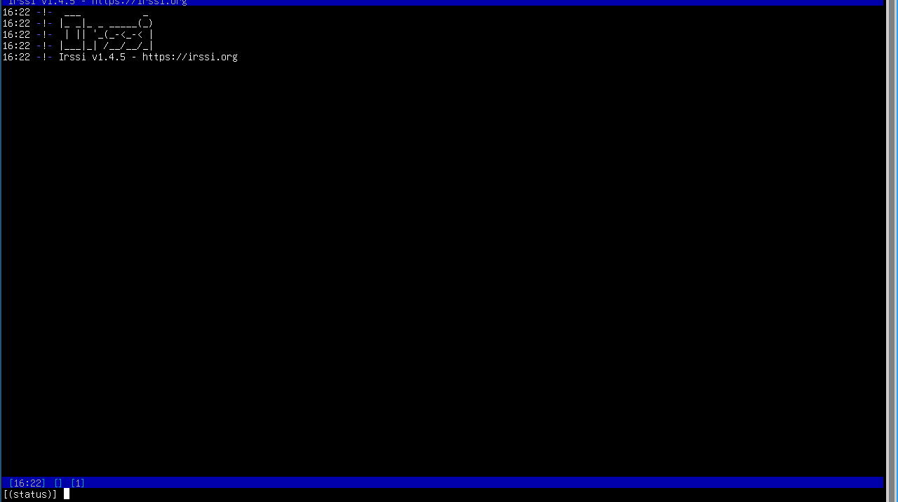

IRC:
Se caso você não sabe o que é IRC ou também conhecido como Internet Relay Chat, era um protocolo de comunicação
na internet criado nos anos de 1980, muitas pessoas utilizava esse serviço para conversar na internet e bem como
se usa esse tipo de serviço? Simples... Você precisa de um cliente IRC (Que no caso a maioria usa hexchat ou até
o KiwiIRC) e claro você também iria precisar de um endereço do servidor, como por exemplo: irc.libera.chat ou até
irc.freenode.net (Que inclusive esses dois que eu citei eram famosos na época) e claro após isso escolher um nickname
e entrar em algum canal, por exemplo: #nome-do-canal que era nesses canais que você iria conversar com os outros.
IRC ainda é usado?:
Sinceramente? Não, mas ainda existem usuários que usam IRC para conversar, por exemplo na darknet usa muito isso, outro exemplo
que usam também são fórums como 4chan, lainchan e outros (O Reddit também possui IRC), mas, devido as novas tecnologias de comunicação
como por exemplo o Whatsapp, Instagram e até mesmo Facebook, simplesmente o IRC acabou parando de ser usado, mas ainda existem pessoas
que usam isso (Inclusive sou uma delas).
IRSSI:
Bem, já que estamos falando de terminal, vou te apresentar uma ferramenta que é um cliente IRC que funciona via terminal,
e ela se chama IRSSI, se quiser instalar use: sudo apt install irssi.

Bem, para entrar nessa tela use: irssi
Que bem vai abrir nessa tela, e bem relaxa, aqui vai uma planilha com os comandos básicos que posso te passar: